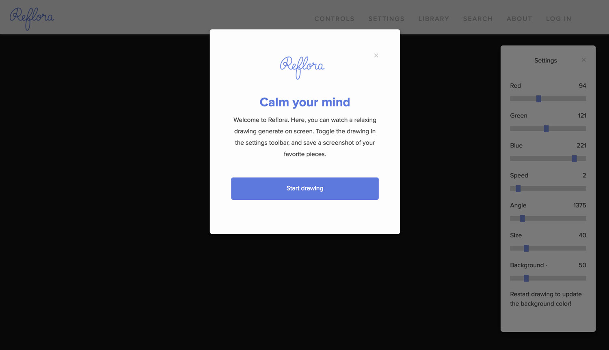
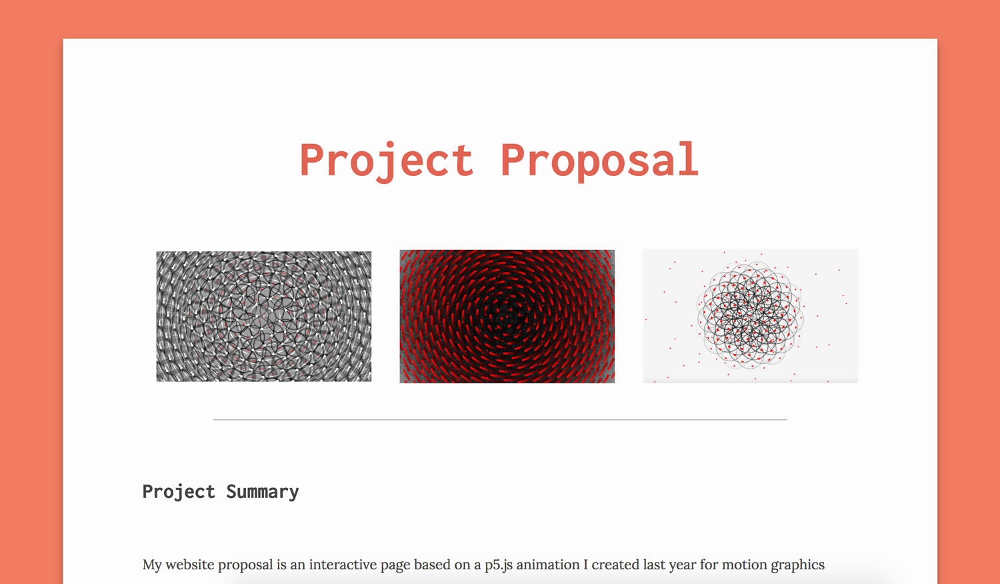

Landing
For the landing and login screens, I used a bootstrap modal to keep the experience contained to a single page as much as possible.

Controls
The controls sidebar contains basic commands like "reset canvas," "pause drawing," "open settings," and "save drawing." Save drawing will save the screen as a PNG document to your downloads. In addition, each time you click "Save" your drawing settings are saved and stored with your user ID (or anonymous if you don't have an account or haven't logged in), so that specific settings are searchable by all users.
Settings
In the settings, you can change the R, G, B values of the drawing, as well as the speed, angle, and size of the dots generated on screen. Resizing the window will also reset the background based on the color chosen for the "Background" setting.
Library
The library bar allows you to see the last three drawings other users have uploaded, and upload your own.

Login
Logging in will allow the program to remember your last saved settings and also change your user info.
User Search
Here you can search for users by username, drawings created at certain hours, and ellipse color - red, blue, or yellow. The search engine was primarily an exercise in using SQL databases and interacting with them with PHP.
Data Viz
From the user data, we were able to generate two visualizations, one with the average colors used by site visitors (a stunningly bland slate gray), and color tiles saved each time a user clicks "save" on their drawing.

Original Instructions
INTRO Originally modelled after phyllotaxis, the arrangement of leaves on an axis or stem, as explained by The Coding Train.
INSTRUCTIONS Move your mouse to start.
Command - R to refresh the page and change the background (random grayscale)
Spacebar - to rotate the canvas in reverse
Up, Down, Left, Right arrows - to translate generated ellipses
Esc - stops sketch from generating ellipses around center point
MouseX - will determine diameter of ellipses, with left being smallest and right being largest
Enter - will regenerate background
When mouse is on the left half of the canvas:
MouseY - Vertical mouse position controls default red fill color, with the top of the canvas as black and the bottom as red, and a gradient in between.
Q - change fill to black
W - change fill to white
E - change fill to yellow
R - change fill to magenta
T - change fill to cyan
When mouse is on right half of canvas:
MouseY - changes stroke to white in bottom right quadrant, and black in upper right quadrant of canvas
Version One to Final Site
The first project, which I dubbed phyllotaxis in reference to the pattern that was generated on screen, was a pure p5.js project. I knew when I finished that project that I wanted to add an HTML interface to make the interaction more user centric, which I had the chance to pursue with a team in this class.
Project Proposal
I pitched the interface idea to my Dev II class here, where I explained what I created the previous semester and what my vision for the Reflora site would be.

Logo & Mockups
From there, I developed mockups on Sketch and inVision while my teammates fleshed out the database structure.
InVision Demo
I used the last mockup and brought it to inVision to illustrate what Reflora would look like once built.